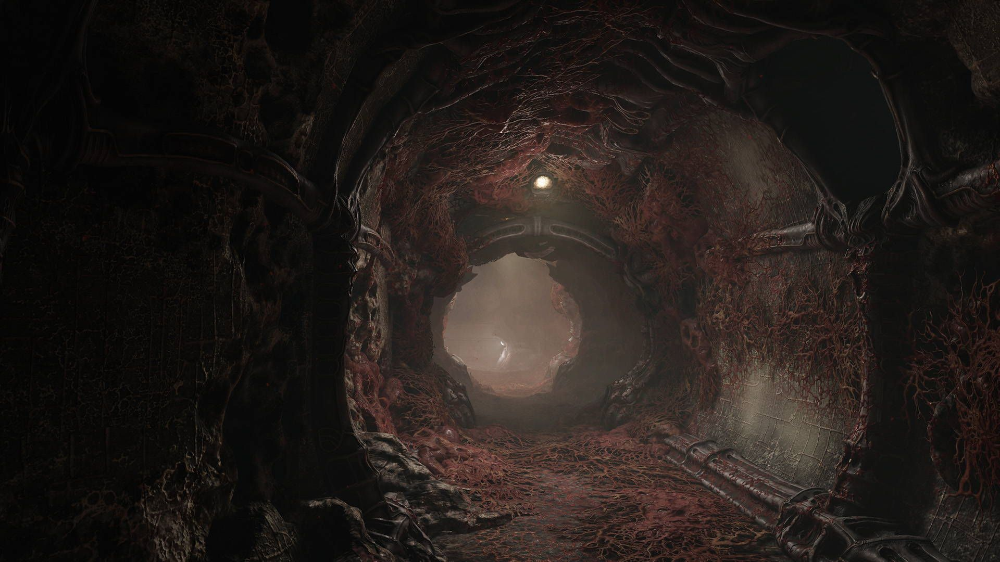
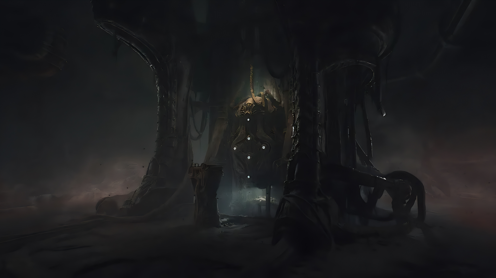
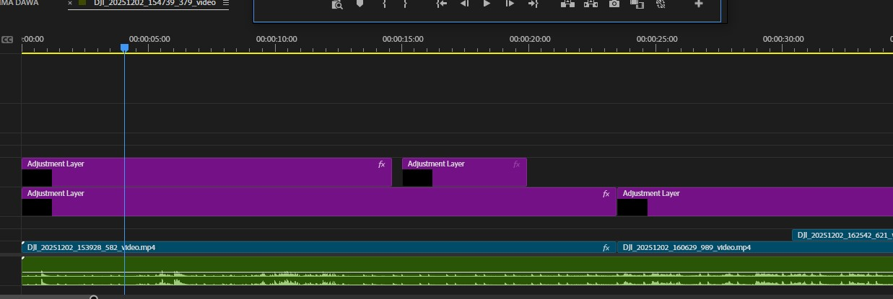

Au premier semestre de ma deuxième année d'université, j'ai co-réalisé avec quatre étudiants un court-métrage explorant la transition entre réalité et fiction. Le passage à un monde fictif est marqué par le changement du français à l'anglais de la voix off.
Le court-métrage ne devant pas dépasser les 1 minutes 30, nous devions réussir à écrire un scénario avec une trame claire.
La séquence fictive a été réalisée en prise de vues sur fond vert, nécessitant un travail de post-production pour l'incrustation. Ce processus impliquait une recherche iconographique précise afin de sélectionner des images cohérentes avec l'univers du court-métrage.
Notre premier objectif a été de choisir une image autour de laquelle on écrira notre scénario. Après recerches et discussions, nous avons choisi deux images.


Une fois cela fait, moi et un de mes camarades avons écrit chacun un script autour du même scénario. Après avoir choisi de fusionner nos idées, j'ai pris en charge la rédaction de la version finale du script pour en assurer la cohérence globale.
La phase de production s'est déroulée en deux temps après un repérage ciblé. La première journée nous a confrontés aux exigences du tournage dans un environnement étroit et difficile, nécessitant une adaptation aux contraintes spaciales. La seconde a été consacrée aux prises de vues sur fond vert. En totale autonomie, nous avons assuré la gestion technique de l’image, de la lumière et de la captation sonore.
La phase finale de montage m'a permis de donner vie au projet. J'ai pris en charge le traitement de l'image (colorimétrie) et la post-production audio, veillant à ce que chaque aspect technique serve la narration et l'ambiance visuelle que nous avions imaginée.
